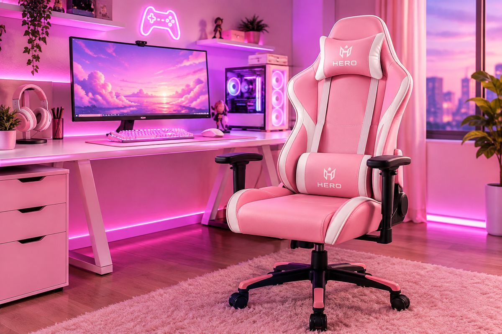
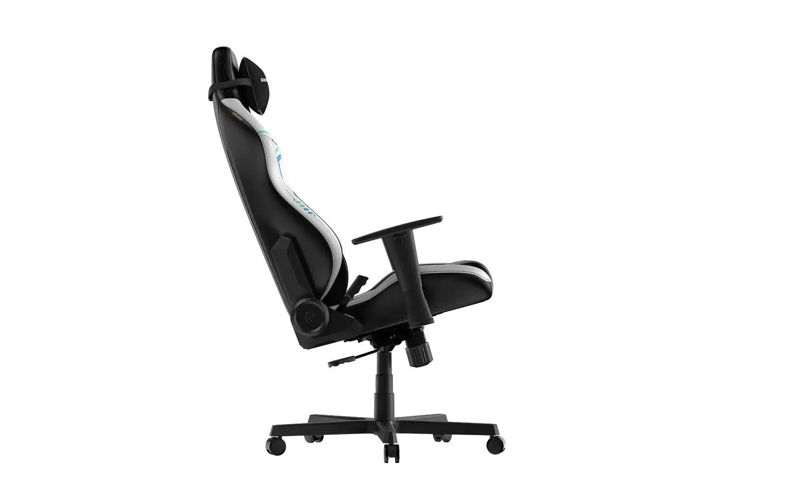
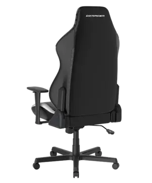
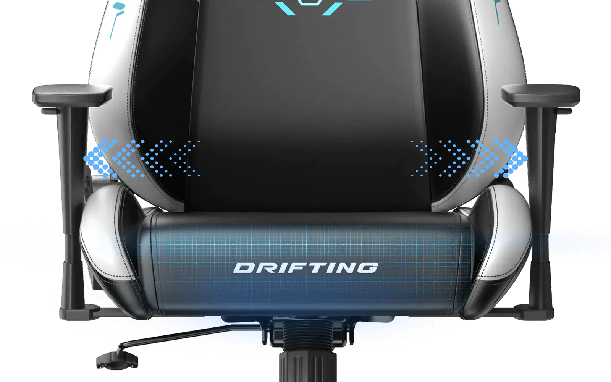
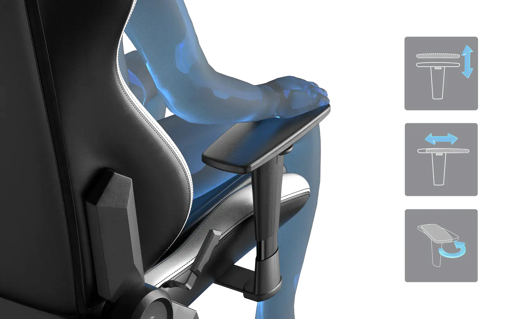
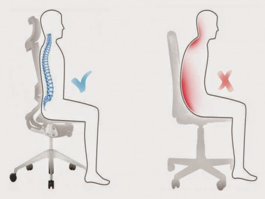

Especialistas en el diseño y distribución de sillas ergonómicas, creadas para mejorar el rendimiento gamer y el confort en largas jornadas de trabajo ejecutivas.
EDICIÓN ESPECIAL AURA PRO
6 CUOTAS SIN INTERÉS
O 15% OFF POR TRANSFERENCIA
CÓDIGO PROMO: TRANSFE15

Detalles y Ergonomía de Excelencia

Perfil Aerodinámico
Soporte lateral diseñado para posturas de alto rendimiento.

Estructura Reforzada
Chasis metálico que garantiza la mayor estabilidad.

Soporte Lumbar Integrado
Cuidado preciso para mantener la curvatura natural de la columna.

Apoyabrazos Ajustables 3D
Ajuste de altura, ángulo y posición horizontal.
Nuestra Propuesta
Buscamos ofrecer la mejor postura corporal cuidando la salud lumbar de nuestros usuarios a través de materiales de alta calidad y diseños ergonómicos vanguardistas.
Beneficios de Elegirnos
Diseño enfocado en la salud postural y descanso.
Materiales resistentes de alta densidad.
Garantía oficial y soporte técnico personalizado.
Catálogo Destacado
AURA DRIFTING Series
Silla Gamer Estilo Carrera
Diseño Aerodinámico
Edición Limitada Pro
Drifting Negro Blanco
$869.090
Cuero Sintético EPU™
Talle LEn Stock XL
Aura Executive Pro
$938.590
Cuero Sintético EPU™
En Stock L
Funciones y Ergonomía
Tu silla debe cumplir con los requisitos de ergonomía más exigentes, ya que se estima que la utilizarás durante muchas horas seguidas. En primer lugar, debe permitir que tu columna descanse con un buen apoyo lumbar a la vez que toda tu espalda queda bien recostada en ella.
Una mala sujeción de la espalda puede llegar a provocarte microtraumatismos dorsales dolorosos. Se trata de una dolencia tan frecuente que es una de las principales causas de baja laboral en las empresas. Es por ello que las sillas gaming son algunas de las mejores opciones para el dolor de espalda.

Sistema de soporte y ajuste lumbar de alta densidad.
Partes de una Silla Gaming
Las sillas gaming cuentan con algunas partes imprescindibles y algunos elementos que varían entre unos modelos y otros. Todas las sillas gaming deben contar con:
Respaldo: Parte fundamental de la silla, suele ser alto y ergonómico para proporcionar soporte completo a la espalda, especialmente a la zona lumbar y cervical.
Asiento: Amplio y cómodo, a menudo con acolchado extra para mayor confort. Algunas sillas incluyen opciones de ajuste de profundidad.
Reposabrazos: Generalmente ajustables en altura, dirección y a veces en anchura. Los apoyabrazos ergonómicos ayudan a reducir la tensión en los hombros y brazos.
Soporte Lumbar y Cervical: Muchas sillas gaming incluyen cojines adicionales para soporte lumbar y cervical, mejorando la postura y el confort.
Mecanismo de Inclinación: Permite a los usuarios reclinar la silla hacia atrás. Algunas permiten bloquear la inclinación en posiciones específicas.
Base y Ruedas: La base suele ser de metal resistente, con ruedas diseñadas para deslizarse suavemente sobre diferentes superficies sin dañarlas.
Pistón de Gas: Permite el ajuste de la altura de la silla. Los pistones de gas de calidad garantizan un movimiento suave y una buena durabilidad.
Revestimiento: El material externo, que puede ser de cuero, cuero sintético, tela o una combinación de estos, es importante tanto por estética como por comodidad y durabilidad.
En una buena silla gaming las diferentes partes siempre se adaptarán a vos. Dado que no todas las personas tienen la misma complexión, una buena silla gaming debe permitir el ajuste de sus partes para proporcionarte el confort y el bienestar que necesitás mientras jugás. Podrás ajustar elementos como los reposabrazos, el respaldo, el soporte lumbar o el reposacabezas para un mayor confort.
Además debe permitirte disfrutar de momentos de relax y brindarte la posibilidad de apoyar tu cabeza de forma cómoda. No podemos olvidar que tu silla ideal debe disponer de reposabrazos para que tus brazos también descansen y no se sobrecarguen.
Especificaciones Técnicas
Lo que debés mirar antes de comprar una silla gaming se enfoca específicamente en lo siguiente:
Su material de fabricación debe ser duradero, resistente y adecuado a tus preferencias.
Si tiene ruedas, deben estar elaboradas preferiblemente en nylon.
Sus reposabrazos deben estar elaborados o recubiertos con material suave al tacto.
Su diseño debe contar con apoyo para la zona lumbar.